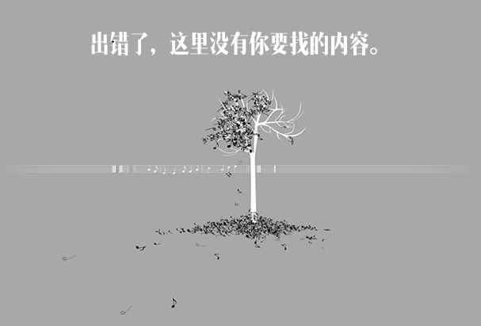

<!DOCTYPE html>
<!-- 内容页的壳子，为web使用 -->
<html>
<head>
<meta charset="UTF-8">

<meta http-equiv="Content-Type" content="text/html; charset=UTF-8">
<meta http-equiv="cache-control" content="no-cache"/>
<meta http-equiv="pragma" content="no-cache"/>
<meta http-equiv="expires" content="0"/>

<meta name="viewport" content="width=device-width,height=device-height,inital-scale=1.0,maximum-scale=1.0,user-scalable=no;">
<meta name="apple-mobile-web-app-capable" content="yes">
<meta name="apple-mobile-web-app-status-bar-style" content="black">
<meta name="format-detection" content="telephone=no">
<meta name="viewport" content="width=device-width, initial-scale=1.0">
<!--[if lt IE 8]>
<script>
  alert('本系统已不支持IE6-8，请使用谷歌、火狐等浏览器\n或360、QQ等国产浏览器的极速模式浏览本页面！');
</script>
<![endif]-->

<script src="./resources/plugins/hplus/js/jquery-2.1.1.min.js"></script>
<script src="./resources/js/common.utils.js"></script>
<script src="./resources/js/context.utils.js"></script>
<script src="./resources/js/framework.utils.js"></script>
<script src="./resources/plugins/spiritui/jq.spirit.utils.js"></script>
<script src="./resources/plugins/bootstrap/js/bootstrap.min.js"></script>

<link rel="stylesheet" media="screen" href="./resources/plugins/bootstrap/css/bootstrap.min.css">
<link rel="stylesheet" type="text/css" href="./resources/chopin/css/font.css"/>
<link rel="stylesheet" type="text/css" href="./resources/css/common.css"/>
<link rel="stylesheet" type="text/css" href="./resources/css/mainPage.css"/>
<link rel="stylesheet" type="text/css" href="./resources/plugins/spiritui/themes/default/all.css"/>

<title></title>
<style>
html { color:#000; background:#fff; }
body {margin:0;}

#vote_main {
  padding: 0 20px;
}
#mainTable {
  width:100%;
}
#mainTable tr:first-child {
  border-top:0;
}
._tr {
  height:100px;
  border-top:1px solid #D9D9D9;
  padding: 20px 7px 19px 7px;
}
._portrait {
  width:105px;
  padding-left:5px;
}
._portrait img {
  height:80px;
  width:80px;
  border-radius:40px;
  border: 1px solid #FFA634;
  cursor:pointer;
}
._progress {
  width:*;
}
._progressBar {
  width:*;
  margin-top:8px;
}
._vote {
  cursor:pointer;
  width:100px;
  padding-left:35px;
}
._vote img {
  height:50px;
  width:50px;
}
._voteText {
  color:#FFA634;
  font-size:18px;
}
._gray {
  filter:progid:DXImageTransform.Microsoft.BasicImage(grayscale=1);
  -webkit-filter: grayscale(100%);
}
._desc {
  position:relative;
  width:100%;
  height:30px;
  color:#000;
  font-size:20px;
  font-weight:block;
  font-family: vista_MS;
  margin-top:25px;
}
._desc_name {
  position:absolute;
  left:0px;
}
._desc_score {
  position:absolute;
  right:0px;
}

.m_tr {
  height:80px;
  border-top:1px solid #D9D9D9;
}
.m_portrait {
  width:75px;
  padding-left:15px;
}
.m_portrait img {
  height:60px;
  width:60px;
  border-radius:30px;
  border:1px solid #FFA634;
  cursor:pointer;
}
.m_progress {
  width:*;
}
.m_progressBar {
  width:*;
  height:15px;
  margin-top:7px;
}
.m_vote {
  cursor:pointer;
  width:60px;
  padding-left:10px;
}
.m_vote img {
  height:40px;
  width:40px;
}
.m_voteText {
  color:#FFA634;
  font-size:15px;
}
._gray {
  filter:progid:DXImageTransform.Microsoft.BasicImage(grayscale=1);
  -webkit-filter: grayscale(100%);
}
.m_desc {
  position:relative;
  width:100%;
  height:25px;
  color:#000;
  font-size:20px;
  font-weight:800;
  padding-top:20px;
  margin-top:8px;
}
.m_desc_name {
  position:absolute;
  left:0px;
}
.m_desc_score {
  font-weight:400;
  position:absolute;
  right:0px;
}
.nullBack {
  display: inline-block; 
  width: 100%; 
  height: 500; 
  text-height:500;
  valign:center;
  align:center;
  font-size:36;
  color:#fff;
  font-family:vista_MS;

}
</style>
</head>
<body><center>
<div id="vote_main" style="display:yes;">
<table id="mainTable"></table>
</div>
<iframe src="session.jsp" width="0" height="0" style="display:none"></iframe>
</center></body>

<script>
function setDeviceId(sessionId) {
  deviceId=sessionId;
}

var isApp=getUrlParam(window.location.href, "isApp");//如果是App就有这个值
isApp=!(!isApp);
var rootPath=getRootPath();
var bars=[];
var maxVote=0;
var maxId="";
var indexPage=getMainPage();
var deviceId="";
var deviceId=(isApp?getUrlParam(window.location.href, "IMEI"):"");
var pcdType=(isApp?1:3);

//主函数
$(function() {
  if (rootPath.length==1) rootPath="http://www.wotingfm.com/Chopin/";
  $.ajax({type:"post", async:true, url:rootPath+"playSumCount.do", dataType:"json",
    timeout:2000,
    success: function(jsonData) {
      if (jsonData.ReturnType=='1001') drawPage(jsonData.ResultInfo);
      else showNullPage();
    },
    error: function(jqXHR) {
      showNullPage();
    }
  });
});
function drawPage(_data) {
  if ($(window).width()<500) {
    $("#vote_main").css("padding","0");
  }
  var i=0;
  for (; i<_data.length; i++) {
    _data[i].FavoSum=_data[i].FavoSum==-1?0:_data[i].FavoSum;
    if ($(window).width()<500) {
      var newLine=$("<tr class='m_tr' id='tr_"+_data[i].ContentId+"'><td class='m_portrait' onclick='showPlayer(\""+_data[i].ContentId+"\")'></img></td>"
        +"<td class='m_progress'><div class='m_desc'><div class='m_desc_name'>"+_data[i].UserName+"</div><div class='m_desc_score'>"+_data[i].FavoSum+"票</div></div>"
        +"<div class='m_progressBar progress progress-warning active'><div id='bar_"+_data[i].ContentId+"' class='bar' style='width: 0%'></div></div></td>"
        +"<td class='m_vote _gray' title='投票' onclick='votePlayer(\""+_data[i].ContentId+"\")' id='vote_"+_data[i].ContentId+"'><div></img></div><div class='m_voteText'>投1票</div></td></tr>");
    } else {
      var newLine=$("<tr class='_tr' id='tr_"+_data[i].ContentId+"'><td class='_portrait' onclick='showPlayer(\""+_data[i].ContentId+"\")'></img></td>"
        +"<td class='_progress'><div class='_desc'><div class='_desc_name'>"+_data[i].UserName+"</div><div class='_desc_score'>"+_data[i].FavoSum+"票</div></div>"
        +"<div class='_progressBar progress progress-warning active'><div id='bar_"+_data[i].ContentId+"' class='bar' style='width: 0%'></div></div></td>"
        +"<td class='_vote _gray' title='投票' onclick='votePlayer(\""+_data[i].ContentId+"\")' id='vote_"+_data[i].ContentId+"'><div></img></div><div class='_voteText'>投1票</div></td></tr>");
    }
    if (_data[i].IsFavorate==1) {
      $(newLine).find("._vote").removeClass("_gray");
      $(newLine).find("._vote").attr("onclick", "");
      $(newLine).find("._vote").css("cursor","auto");
      $(newLine).find("._vote").attr("title", "");
      $(newLine).find("._voteText").html("已投票");
      $(newLine).find(".m_vote").removeClass("_gray");
      $(newLine).find(".m_vote").attr("onclick", "");
      $(newLine).find(".m_vote").css("cursor","auto");
      $(newLine).find(".m_vote").attr("title", "");
      $(newLine).find(".m_voteText").html("已投票");
    }
    if (maxVote==_data[i].FavoSum) {
      maxId+=_data[i].ContentId+",";
    }
    if (maxVote<_data[i].FavoSum) {
      maxVote=_data[i].FavoSum;
      maxId=_data[i].ContentId;
    }
    bars.push({"barId":"bar_"+_data[i].ContentId, "favoSum":_data[i].FavoSum==-1?0:_data[i].FavoSum, "percent":"0%"});
    $("#mainTable").append(newLine);
  }
  var _maxVoteAll=(maxVote/4)*5;
  for (i=0; i<bars.length; i++) {
    bars[i].percent=((bars[i].favoSum/_maxVoteAll)*100)+"%";
  }
  setTimeout(function(){
    for (var i=0; i<bars.length; i++) {
      $("#"+bars[i].barId).attr("style", "width:"+bars[i].percent);
    }
  }, 200);
}
function showPlayer(cId) {
  if (isApp) window.open(rootPath+"articleShell.html?ContentId="+cId, "_blank");
  else window.open(rootPath+"articleFrameShell.html?ContentId="+cId, "_self");
}
function votePlayer(cId) {
  var _data={};
  _data.IMEI=deviceId;
   _data.PCDType
  $.ajax({type:"post", async:true, url:rootPath+"clickFavorite.do", dataType:"json", data:_data,
    timeout:2000,
    success: function(jsonData) {
      if (jsonData.ReturnType=='1001') drawPage(jsonData.ResultInfo);
      else showNullPage();
    },
    error: function(jqXHR) {
      showNullPage();
    }
  });
  
  var _maxChange=(maxId.indexOf(cId)!=-1);
  var _maxVoteAll=(maxVote/4)*5;

  if (_maxChange) {
    maxVote++;
    _maxVoteAll=(maxVote/5)*6;
    maxId=cId;
  }
  console.log(maxVote);
  console.log(_maxVoteAll);
  for (var i=0; i<bars.length; i++) {
    if (bars[i].barId=="bar_"+cId) {
      bars[i].favoSum=bars[i].favoSum+1;
      console.log($("#tr_"+cId).find("._desc_score").html());
      console.log($("#tr_"+cId).find(".m_desc_score").html());
      $("#tr_"+cId).find("._desc_score").html(bars[i].favoSum+"票");
      $("#tr_"+cId).find(".m_desc_score").html(bars[i].favoSum+"票");
      $("#vote_"+cId).find("._voteText").html("已投票");
      $("#vote_"+cId).find(".m_voteText").html("已投票");
      $("#vote_"+cId).removeClass("_gray");
      $("#vote_"+cId).attr("title","");
      $("#vote_"+cId).attr("onclick", "");
      $("#vote_"+cId).css("cursor","auto");
    }
    if (_maxChange) {
      bars[i].percent=((bars[i].favoSum/_maxVoteAll)*100)+"%";
      $("#"+bars[i].barId).attr("style", "width:"+bars[i].percent);
    } else {
      if (bars[i].barId=="bar_"+cId) {
        bars[i].percent=((bars[i].favoSum/_maxVoteAll)*100)+"%";
        $("#"+bars[i].barId).attr("style", "width:"+bars[i].percent);
      }
    }
  }
}
function showNullPage() {
  $("html").css("background-color", "#A8A8A8");
  $("#vote_main").css("background-color", "#A8A8A8");
  $("#vote_main").html("");
  $("#vote_main").css("align", "center");
  var nullImg=$("</img>");
  $("#vote_main").append(nullImg);
  var minWidth=607;
  if ($(window).width()<minWidth) {
    $(nullImg).css({"width":($(window).width()-20)});
    $(nullImg).css({"height":function(){return ($(window).width()-20)*(411/minWidth);}});
  } else {
    $(nullImg).css({"width":minWidth, "height":411});
    $(nullImg).css({"margin-top":"5px"});
    $(nullImg).css({"margin-left":function(){return (($(window).width()-minWidth)/2);}});
  }
}
</script>
</html>